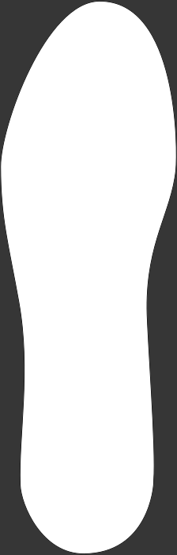
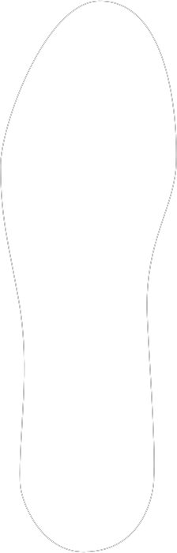

Connect
Start Recording
Save Data
Please check that:
Infi-Tex Sampler is connected to USB
You are using
Chrome
browser
Experimental Web Platform features are enabled here:
chrome://flags/#enable-experimental-web-platform-features


x:
y:
z: